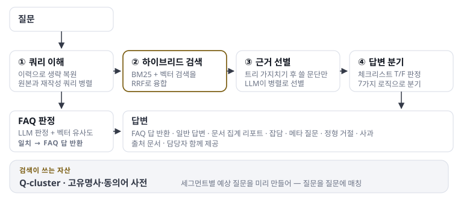
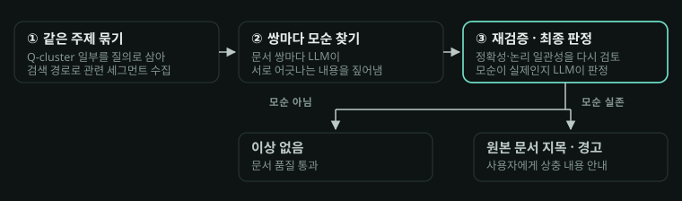

MARGE(MAgellan RaG Engine)
MARGE는 넷마블의 사내 RAG 엔진입니다.
1세대(단일 플로우 RAG)는 2인 프로젝트의 주담당으로 엔진 설계 · 기획 · 구현과 서비스 운영을 맡았습니다. 질문 이해부터 검색 · 리랭킹 · 답변 생성, 문서 충돌 감지까지 직접 만들었고, 문서 수집 · 인덱싱 파이프라인과 인프라는 동료가 주도했습니다.
이후 다년간 운영하면서 누적된 기술부채를 해결하기 위해 MARGE 2세대로 리뉴얼을 진행했습니다. 저는 2세대 MARGE의 초기 설계 및 구현까지 진행했습니다. 현재는 직접 관여 없이 같이 논의하는 것으로 참여하고 있습니다.
1세대 MARGE — Problem · Analyze · Action직접 설계 · 구현
Problem
- 01쿼리 이해유저 질문은 항상 깔끔하게 입력되지 않습니다. 관계자만 이해할 수 있는 특수한 단어나 축약된 단어가 들어오기도 하고, 멀티턴 대화의 경우 핵심 단어가 생략된 채 입력되기도 합니다.
- 02검색유저의 질문은 보통 길거나 짧은 문장 형태지만 실제 문서는 그렇게 구성되어 있지 않습니다. RRF로 검색을 구현할 때, BM25는 단어 간 비교가 기본이기 때문에 문제 없지만 벡터 비교는 정확도가 떨어질 수 있습니다.
- 03문서 전처리RAG에 입력되는 문서는 길이가 불규칙해 수십만 토큰짜리를 통째로 넣을 수 없고, LLM은 긴 입력을 온전히 이해하기도 어려워합니다. 들어가는 텍스트의 양을 전처리와 검색 양쪽에서 조절해야 합니다.
- 04문서 품질검색 정확도가 아무리 높아도 원본이 잘못되면 답변이 잘못됩니다. 특히 넷마블에서는 오래 운영된 사내 문서가 많았고, 흩어진 문서에서 같은 내용을 다르게 서술하는 경우가 많았습니다.
- 05답변 생성잡담부터 즉답, 집계 리포트까지 질문마다 필요한 답의 모양이 다릅니다. 하나의 흐름에 다 태우면 엉뚱한 답이 나갑니다.
Analyze설계 판단
01쿼리 이해본 파이프라인을 시작하기 이전에 유저의 질문을 깔끔하게 정제하는 과정이 필요하다고 판단했습니다. 이 과정을 거쳐야 검색 성능이 대폭 향상될 수 있습니다.
02검색크로스인코더는 도메인별 파인튜닝 및 서빙이 어렵다 판단하여 제외했습니다. 대신 LLM을 사용하고자 했습니다. 질문은 질문끼리 비교하는 게 정확하다고 봤습니다.
03문서 전처리토큰 수 기준으로 기계적으로 자르면 문장이나 설명이 중간에서 끊깁니다. 잘린 조각은 검색돼도 반쪽짜리 근거가 됩니다. 그래서 의미적으로 잘림 없는 문서 전처리가 필요했습니다.
04문서 품질문제를 풀기 위한 방법은 두 가지가 존재했습니다. RAG 파이프라인에서 해결하기 vs 유저에게 문서 자체 개선을 권장하기. 당시 유저 쪽에서 답변 속도가 느려지는 것을 극도로 꺼려했기 때문에, 파이프라인에서 해결하는 것 대신 문서 개선을 권장할 수 있는 방향으로 결정했습니다.
05답변 생성검색 뒤 LLM 분석으로 질문의 유형을 분류해, 유형에 맞는 답변 경로로 라우팅하기로 판단했습니다.
Action구현
01쿼리 이해멀티턴 대화를 불러와 유저의 의도에 걸맞는 정제된 문장을 LLM이 생성하게 했습니다. 원본 쿼리도 그대로 검색에 병렬로 태웁니다. LLM 재생성이 잘못된 경우를 방지하기 위함입니다. 이 쿼리 생성 단계에서는 프로젝트별로 구축된 고유명사와 동의어 사전을 함께 활용합니다.
02검색03문서 전처리문서는 고정 길이 대신 시맨틱 청킹으로 조각냈습니다(Lumberchunker 논문 참조). 청킹 때 LLM으로 각 조각의 예상 질문(Q-cluster)을 미리 생성해 두고, 유저 질문을 그 질문들에 매칭합니다. 검색은 키워드(BM25)와 Q-cluster 벡터 두 경로를 RRF로 융합했고, 융합은 자체 구현입니다. 고유명사 사전과 고유명사 그래프를 구축해 쿼리 재작성 · 검색 · 답변 생성에 공급했고, 새 조직 · 용어가 생길 때마다 갱신이 운영 업무로 남는 것은 감수했습니다. 검색된 조각은 LLM이 병렬로 재판정(필터링)해 무관한 것을 덜어내고, 그래도 많으면 계층 취합으로 컨텍스트 한도 안에서 누락 없이 답을 만듭니다. 호출 수가 늘어 비용이 증가하는 것은 품질과 맞바꾼 대가입니다. 청킹 파이프라인 구현은 동료가 주도하고 저는 보조했습니다.
04문서 품질Q-cluster로 관련 조각을 모으고, 조각별로 같은 질문에 각각 답하게 한 뒤 상반된 답을 낸 원본 문서를 찾아 사용자에게 경고합니다. 그리고 충돌 감지는 만들고 나서 배운 쪽입니다. 실사용에서 들어오는 팀 대부분이 이미 잘 관리된 문서를 가져왔고, 문서가 바뀔 때마다 다시 돌려야 해 LLM 비용 대비 효용이 낮았습니다. 접는 판단을 했고, 지금의 LLM 성능이면 별도 시스템 없이 답변 생성 단계에서 충돌을 함께 다루는 게 맞다고 봅니다.
05답변 생성질문 유형 분류를 구현하고, 유형에 따라 7가지 답변 전략(즉답 · 근거 요약 · 문서 집계 리포트 · 메타 질문 · 잡담 · 정형 거절 · 사과)으로 분기시켰습니다. 답변 문장마다 출처 문서를 연결하는 인용 후처리를 붙였습니다.
2세대 MARGE — Problem · Analyze · Action초기 설계 · 구현
Problem
- 01고정 플로우플로우가 코드에 굳어 있어 유저의 개선 요청을 받아내기 어려웠습니다. 기능 하나를 바꾸려면 플로우를 뜯어야 했습니다.
- 02구세대 프롬프트프롬프트가 구세대 LLM 기준에 맞춰져 있어, 좋아진 LLM 성능을 흘려보내고 있었습니다.
- 03충돌 감지 효용별도 시스템으로 만든 충돌 감지는 비용 대비 효용이 낮아 외면받았습니다.
Analyze설계 판단
01고정 플로우고정 플로우 대신 계획 → 검색 → 생성 → 검증의 에이전틱 그래프 구조를 택했습니다. 검사 결과에 따라 계획으로 되돌아가는 구조라, 개선 요청을 플로우 수술 없이 받아낼 수 있습니다.
02구세대 프롬프트현 세대 LLM 기준으로 프롬프트와 설계를 다시 세웠습니다.
03충돌 감지 효용별도 시스템 대신 답변을 만들 때 충돌 위험을 함께 감지하는 방향으로 잡았습니다.
Action구현
초기 설계는 공동으로 진행했고, 런타임 파이프라인 구현을 제가 맡았습니다. Google ADK 2.0의 그래프 워크플로우 위에 계획 → 검색 → 생성 → 검증 노드를 배선했습니다 — 1.x의 계층형 구조로는 어렵던 "검사 결과에 따라 계획으로 되돌아가는" 순환이 2.0에서 프레임워크에 들어와, GA 한 달 만에 도입했습니다.
재시도는 최대 3회 예산으로 묶어 항상 종료를 보장하고, 시도 간 문맥 격리로 이전 시도의 답에 끌려가는 것(앵커링)을 막았습니다. 검색은 소스별 모듈로 분리해 계획이 고른 소스를 병렬 실행 — 하나가 죽어도 나머지로 답을 만듭니다. 마지막 관문 Evaluator가 답을 그대로 내보낼지 · 다시 시도할지 · 막을지 판정하고, 막을 때는 지어내는 대신 정해진 거절문을 내보냅니다. 기존 응답 형식 그대로의 호환 창구를 얹어 프론트 수정 없이 전환했습니다.
전환 검증은 1세대 운영에서 확보한 89문항 GT를 사용했습니다. 우위 20 · 동등 69 · 열위 0, 가드레일 50문항에서 유출 양쪽 0건. 응답이 1.5배 느려진 것은 중간 과정을 보여주는 UX로 흡수했습니다. 이후 고도화는 동료가 주도하고, 현재는 논의로 참여합니다.
Result지금의 MARGE
MARGE — 시스템 아키텍처

Future Work검색과 평가
한 번에 제대로 찾아 검색 루프 자체를 줄이는 것을 목표로 하고 있습니다. 두 갈래를 놓고 검토 중입니다. 하나는 문서와 개념을 관계로 이어 그래프로 검색하는 방식(GraphRAG)이고, 다른 하나는 원문을 미리 읽어 OpenWiki 방식처럼 항목 단위로 재구성하는 방식입니다.
평가도 넓히려 합니다. 프로젝트마다 붙는 검색 소스가 달라서, 어떤 소스를 어떤 순서로 거쳤는지 보는 트래젝토리 평가는 공통으로 만들기 어렵습니다. 1세대에서 세운 GT 기반 판정처럼, 최종 답만 놓고 재는 E2E 판정을 프로젝트별로 맞춰 붙이는 쪽을 목표로 두고 있습니다.
Deep Dive
1세대
1세대 — 전체 흐름

검색 — 질문을 질문에 매칭직접 구현
- Q-cluster: 청킹 때 LLM으로 조각별 예상 질문을 미리 생성해 두고, 유저 질문을 문서가 아니라 그 질문들에 매칭합니다 — 질문과 문서는 문장의 생김새가 달라 벡터 정확도가 떨어지는 문제를 형태를 맞춰 푼 것입니다.
- 이중 검색: 원본 쿼리와 재작성 쿼리를 병렬로 검색해 RRF로 융합 — 재작성이 어긋나도 원본 검색이 받쳐줍니다.
- 고유명사 사전 · 그래프: 사내 조직·용어의 사전과 관계 그래프를 구축해 쿼리 재작성 · 검색 · 답변 생성에 공급합니다.
- FAQ 이중 게이트: 즉답은 LLM 판정과 벡터 유사도 임계를 둘 다 넘어야 나갑니다 — 오탐 사례가 나올 때마다 임계를 조정하며 운영했습니다.
시스템 구성판단 · 패키지 직접, 구성은 보조
- GKE: 상시 서빙되는 챗봇과 상주 구성요소가 있는 워크로드라 GKE를 택했습니다. 간헐 배치인 MaMT를 Cloud Run에 올린 것과 반대 판단입니다. 클러스터 구성과 배포(Jenkins CI/CD)는 동료가 주도하고 저는 보조했습니다.
- LLM 호출 공통 패키지: 멀티 프로바이더를 같은 방식으로 부르고, 모든 입출력이 메타정보와 함께 GCS에 적재되게 했습니다. 디버깅과 품질 판정이 이 로그 위에서 돌아갑니다.
문서 충돌 감지 — 만들고 접은 것직접 구현
같은 내용을 다룬 문서끼리 반대 정보를 갖는 문제를 잡기 위해, 조각들에게 같은 질문을 각각 답하게 하고 답을 비교하는 별도 시스템을 만들었습니다.
충돌 감지 흐름

운영 개선 — 쓰이면서 생긴 요구들직접 구현
- 동의어 관리 API: 사내 은어·약칭을 검색에 반영하도록 등록 창구 신설.
- 집계 리포트 모드: 문서 여러 편을 섹션별로 요약해 하나의 리포트로 생성.
- 담당자 연결: 답변에서 담당자 정보를 분리해 이름 · 조직 · 연락처를 정돈된 형태로 제공.
- 운영 튜닝: 인용 오염 제거, 기밀 정보 후처리, FAQ 판정 임계 조정 등 서비스 품질 개선 다수.
2세대
2세대 — 전체 흐름 (최신)

에이전틱 구조공동 설계 · 직접 구현
- ADK 2.0 위에서: 1.x는 에이전트를 계층으로 쌓아 실행하는 구조라 "검사 결과에 따라 계획으로 되돌아가는" 흐름을 만들기 어려웠습니다. 2.0에서 노드 · 조건부 분기 · 순환이 프레임워크에 들어오면서 이 구조를 그대로 옮길 수 있었습니다.
- 권장 방식에서 벗어난 곳: ADK는 노드 사이로 값을 넘기는 방식을 권장하는데, 저희는 공유 상태에 스키마를 걸고 쓸 때마다 검증하는 쪽을 택했습니다. 멀티턴이고, 같은 값을 여러 노드가 쓰고, 채팅 모드에서 노드 입력이 무시되는 문제가 있었기 때문입니다. 왜 벗어났는지 근거를 문서로 남겼습니다.
- 시도 간 문맥 격리: 재시도가 이전 시도의 답을 보지 못하게 문맥을 끊어, 같은 실수에 끌려가는 것(앵커링)을 방지.
- 이후 고도화(동료 주도): 검증에 재생성 판정(검색은 그대로, 답만 다시)이 더해지고, 재검색 왕복은 검색 단계 안의 반복 루프로 진화했습니다 — 위 흐름도는 그 최신 구조입니다. 이 확장 전부가 리뉴얼 때 깐 그래프 골격의 수정 없이 얹혔습니다.
실측 검증 — 전환 시점직접 수행
- 비교 평가: 1세대 운영에서 확보한 GT 89문항(인사 50 · 총무 39)을 기준으로 구형·신형을 비교 — GT는 사람이 만들고, 답변과 GT의 대조 판정은 LLM이 맡았습니다. 우위 20 · 동등 69 · 열위 0.
- 가드레일 실측: 개인정보·금지 주제 50문항. 유출은 양쪽 0건, 오탐은 구형 1건 · 신형 0건.
- 약점도 기록: 응답이 1.5배 느려진 점, 같은 질문에 판정이 갈리는 문제까지 그대로 남겨 전환 판단의 근거로 삼았습니다.